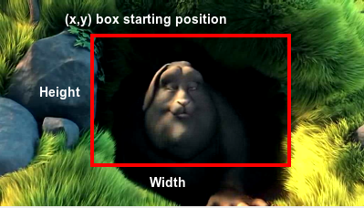

Video Manipulation
Video crop options:
Width:
Height:
point x:
point y:
Video Trim options
Start time :secondsEnd time : seconds
Snapshot from video:
Time:Extract audio from video:
Animated Gif from video:
Start time :secondsEnd time : seconds